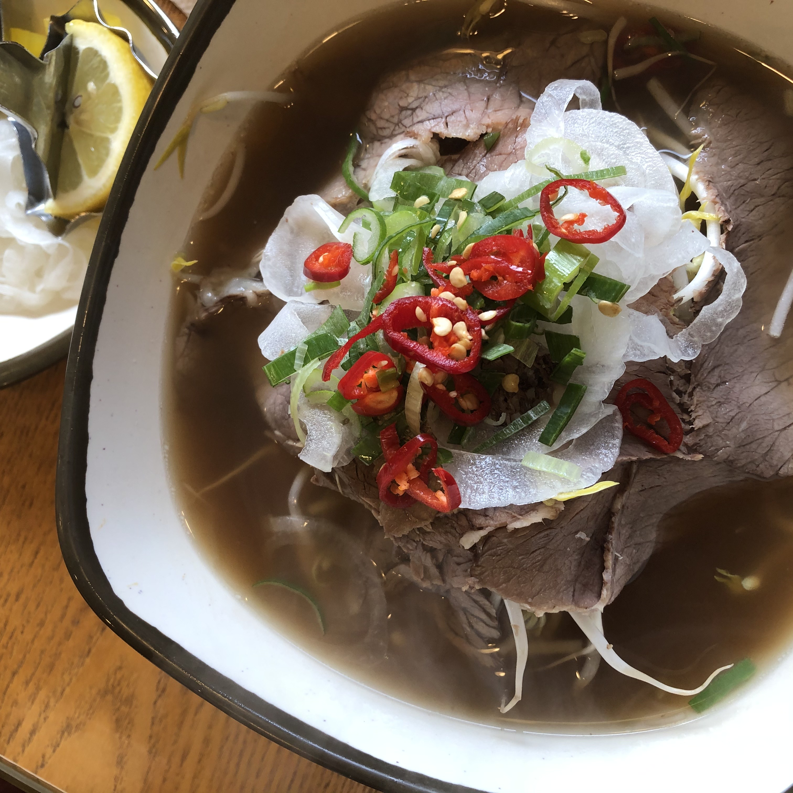

커뮤니티 통계학과 지도 맛집 정보 맛집 정보 맛집1 : 신내떡 신내떡WOW 신내떡의 떡볶이 이야기매운맛에 따라 다른 고춧가루와 14가지 스파이스한 향신료를 넣은 특제소스와 주문즉시 조리한 쫄깃하고 부드러운 떡볶이.그리고 바삭함이 살아있는 갈릭 후라이드와 두 가지 맛 디핑소스까지...나만의 개성과 새로운 아이디어를 떡볶이에 담아...온몸으로 느끼는 맛, WOW! 신내떡신내떡 위치 알아보기 맛집2 : 포36거리  포36거리포36거리는 학교와 정말 가까운 곳에 위치하고 있다. 포36거리에서 가장 유명한 메뉴는 바로 '포돈정식' 저렴한 가격에 쌀국수와 돈가스를 먹을 수 있다! 포장도 가능하니 미리 전화해보고 가시는 걸 추천!포36거리 위치 알아보기 맛집3 : 홍곱창 홍곱창홍곱창의 대표메뉴는 데리야끼 곱창과 불곱창입니다! 1인분 포장이 가능해서 자취생들에게 추천!! 영업시간 : 오후 15시 ~ 24시홍곱창 위치 알아보기